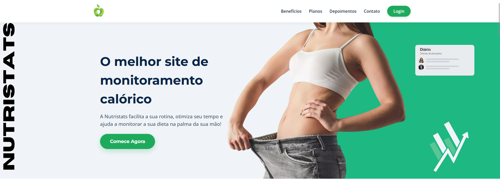
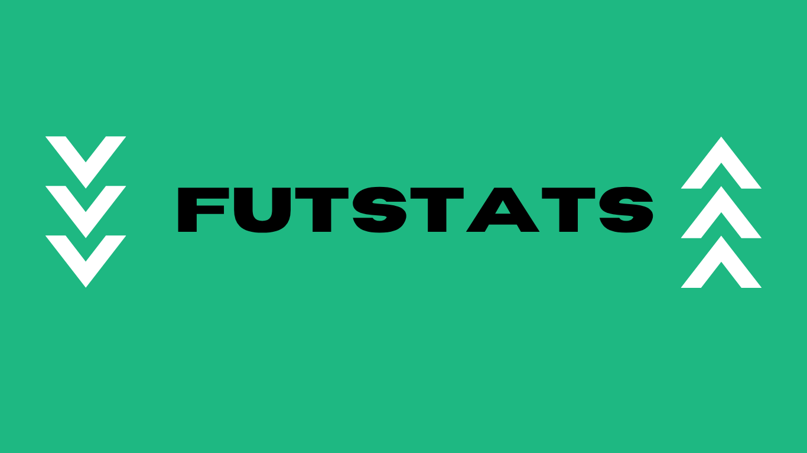
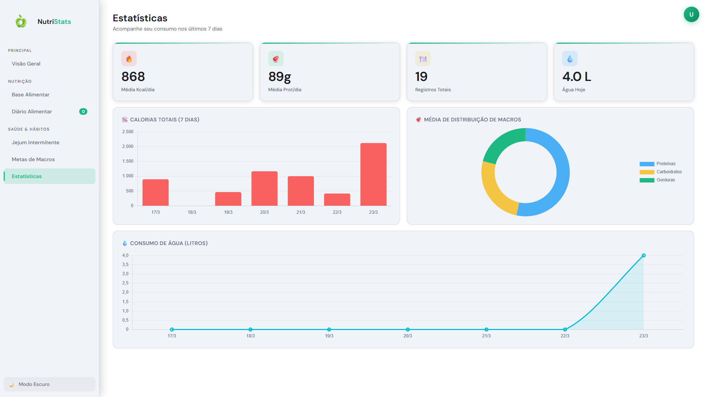
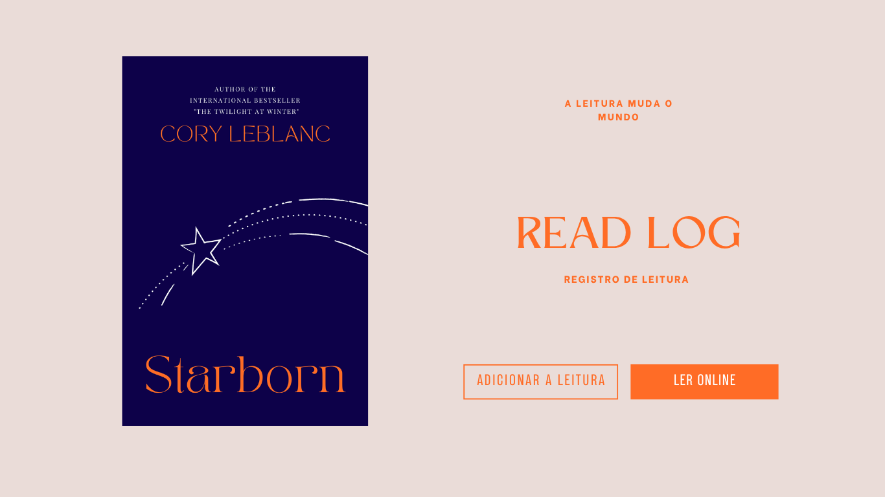

Olá eu sou
Victor Yuri
Sou um |
Estudante de Sistemas de Informação, dedicado ao desenvolvimento de Web sites, Banco de Dados, Análise de Dados, Desenvolvimento de Software e Soluções Tecnológicas. Atualmente estou em busca do meu primeiro estágio para crescer profissionalmente.
Meus Projetos.

NutriStats
Uma plataforma moderna de análise nutricional com monitoramento de dados em tempo real, insights personalizados e uma interface dark mode intuitiva e imersiva..

FutStats
Um dashboard moderno de estatísticas do futebol Europeu com visualização clara de desempenho individuais, dados em tempo real e insights estratégicos.

DashBoard NutriStats
Uma Plataforma com um Dashboard moderno de análise nutricional com visualização clara de métricas, acompanhamento em tempo real e insights inteligentes para uma melhor tomada de decisão, tudo em uma interface intuitiva e imersiva

ReadLog
Uma plataforma moderna para organizar e acompanhar livros já lidos, com registro personalizado de leituras, avaliações e progresso, oferecendo uma experiência intuitiva e imersiva em uma interface clean e funcional.
Habilidades.
Frontend
Backend & Dados
Ferramentas
Vamos Conversar.
Teve interesse em meu trabalho?
Entre em contato comigo!
Entre em contato
vgvitinho80@gmail.com
Telefone
+55 (21) 99121-2764
Localização
Niterói, RJ